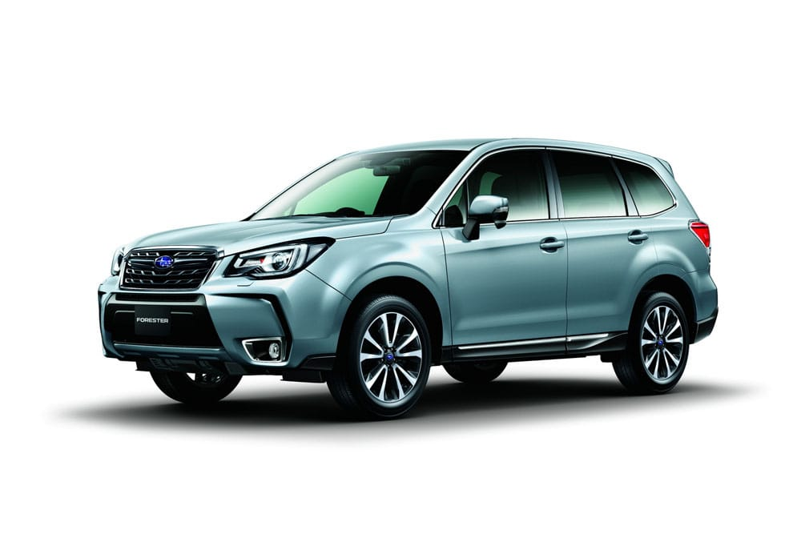
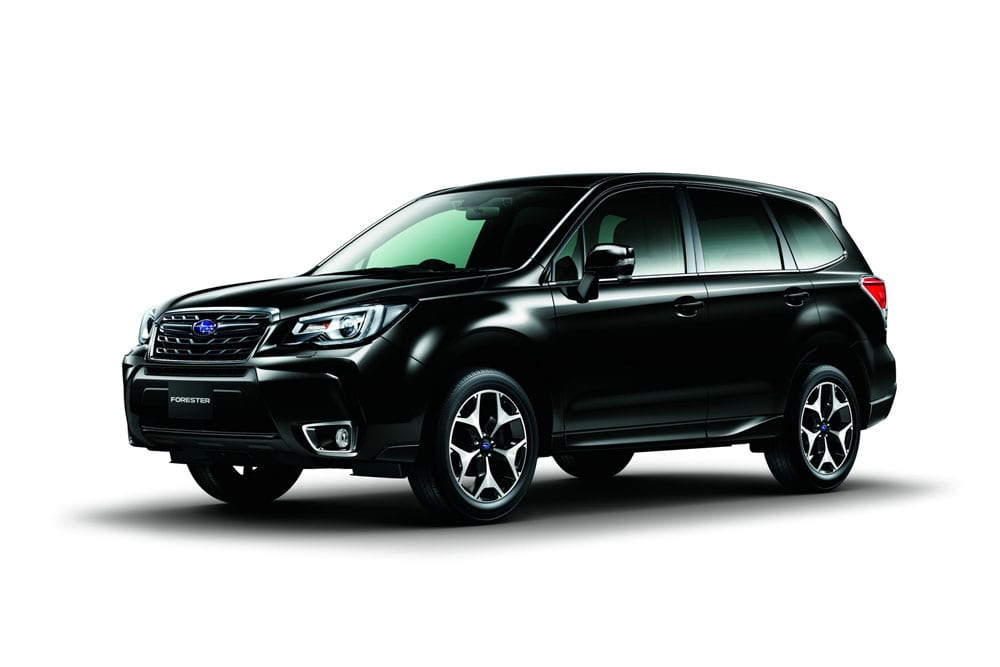
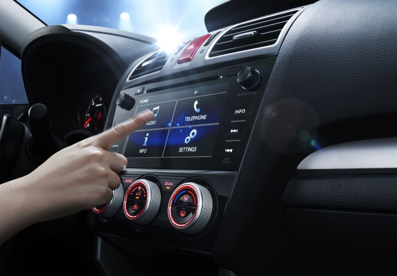
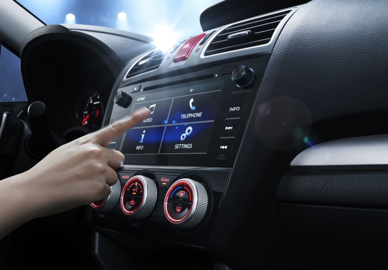

Subaru Forester 2016-2017 Характеристики
Японський кросовер Subaru Forester 4-го покоління пережив оновлення і після офіційної прем'єри на Tokyo Motor Show в жовтні 2015 року надійде в продаж в Японії за ціною від 16540 доларів США (без урахування податків). Рестайлінг версії Субару Форестер 2016-2017 року отримали більш сучасний дизайн кузова, оновлений інтер'єр, модернізовану підвіску і рульове управління, доопрацьований варіатор Lineatronic і комплекс систем безпеки EyeSight 3-ого покоління. У Росії новий Subaru Forester 2016-2017 модельного року купити можна буде з весни майбутнього року, ціна за попередньою інформацією складе від 1650 тисяч рублів.
Зміни в зовнішності пережив оновлення Forester носять, на перший погляд, косметичних характер (фото в галереї). Новинка обзавелася злегка видозміненим бампером, солідної фальшрадиаторной гратами, вдосконаленими фарами головного світла, підкоригувати форму заднього бампера і модернізованими габаритними ліхтарями. В добавок автомобіль комплектується легкосплавними колісними дисками з новим дизайном малюнка, але ... на тлі дорестайлінгових версій Лісника оновлений японський кросовер виглядає явно солідніше, та й, зрозуміло, більш сучасною. Окремо варто розповісти про нову світлотехніку, яка встановлюється на пережив рестайлінг Субару Форестер.

Передні фари головного світла адаптивні зі світлодіодними денними ходовими вогнями, що розташувалися по зовнішньому контуру кожної фари. Фари здатні підсвічувати поворот і автоматично перемикати з далекого на ближнє світло при виявленні на дорозі транспорту, що рухається в зустрічному і попутному напрямку. Задні габаритні ліхтарі обзавелися виразними U-образними виступами зі світлодіодним малюнком, що підкреслюють загальну стилістику задньої світлотехніки.
Зовнішні габаритні розміри кузова нового Субару Форестер 2016-2017 року не змінилися і складають 4595 мм у довжину, 1795 мм в ширину, 1735 мм у висоту, з 2640 мм колісної бази і 220 мм дорожнього просвіту при установці шин 225/60 R17 або 225 / 50 R18.
В інтер'єрі оновленого Forester нових деталей ще менше, ніж на кузові кросовера. Дизайнери і компоновщики трохи змінили рульове колесо, вдосконалили приладову панель і встановили новий 7-ми дюймовий сенсорний екран мультимедійної системи. Як запевняють представники Subaru в салоні кросовера стало тихіше і комфортніше, завдяки установці більш товстих стекол і застосування удосконаленого і менш шумного варіатора Lineatronic.
А ось на чому особливо акцентує увагу японський виробник, так це на те, що оновлений Форестер став більш безпечним і зручним у використанні.
В якості додаткового обладнання для кросовера пропонується всевидюча система безпеки EyeSight зі стереоскопічними камерами, здатними спостерігати за машинами, людьми, велосипедистами і тваринами, а в разі необхідності дати команду на самостійне гальмування автомобіля. В наявності також адаптивний круїз-контроль, система моніторингу сліпих зон зовнішніх дзеркал заднього виду, Advanced Safety, Active Lane Keeping, Lane departure suppression, до 9-ти подушок безпеки, ABS з EBD, Brake Assistant, Safety brake pedal і VDC.
Технічні характеристики рестайлінг версій кроссовера Subaru Forester 2016-2017 модельного року не змінилися, якщо не брати до уваги факт глибокої модернізації підвіски і рульового управління. Перероблена підвіска стала більш міцною, енергоємної і комфортною, рульове управління гострішим і інформативним.
У моторному відсіку оновленого Субару Форестер знайомі по дорестайлінгової версії кросовер бензинові оппозитні двигуни.
2,0-літровий атмосферний (150 к.с. 198 Нм), 2,5-літровий атмосферний (171 к.с. 235 Нм) і 2,0-літровий з турбонаддувом (241 к.с., 350 Нм), всі двигуни працюють в парі з варіатором Lineatronic. В наявності фірмовий повний привід від Subaru Symmetrical AWD з активним розподілом крутного моменту.
Оновлення пішло японському кросоверу на користь, так що новий Форестер, як і раніше, одна з найкращих пропозицій на ринку в своєму сегменті.

 
